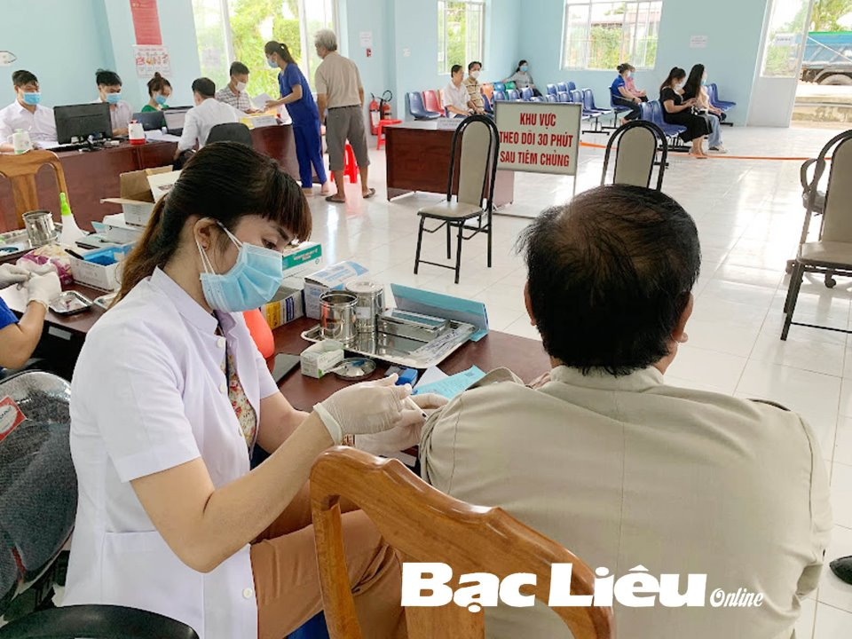
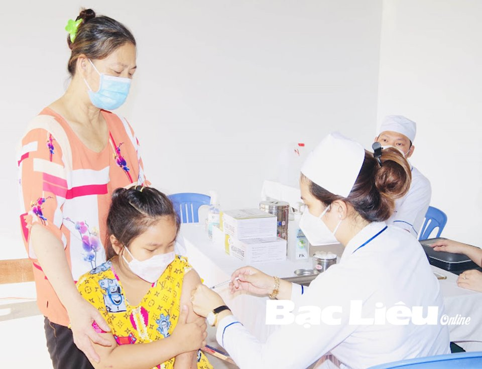

Làm thế nào để phòng tránh các bệnh truyền nhiễm?
Từ trước đến nay, bệnh truyền nhiễm luôn là mối quan tâm của các chuyên gia y tế cũng như rất nhiều người dân vì mức độ và hậu quả của bệnh. Do đó, phòng tránh bệnh lây nhiễm là chủ đề luôn được quan tâm nhất hiện nay.
 Để phòng tránh bệnh lây nhiễm, mỗi người dân nên thực hiện các phương pháp sau đây:
Xây dựng chế độ ăn uống hợp lý
Hệ miễn dịch là hàng rào phòng thủ của cơ thể có tác dụng hàng đầu để chống lại các bệnh truyền nhiễm. Do đó, mỗi chúng ta cần một hệ thống miễn dịch mạnh mẽ bằng cách xây dựng chế độ ăn uống cân bằng có nhiều chất dinh dưỡng, ít thực phẩm chế biến sẵn và thịt đỏ. Ngoài ra, thói quen ăn uống tốt cũng có thể giúp bạn duy trì cân nặng hợp lý.
Ngủ đủ giấc phòng tránh bệnh lây nhiễm
Đây là một yếu tố quan trọng giúp củng cố hệ miễn dịch vượt trội. Khi chìm sâu vào giấc ngủ, cơ thể tạo ra các protein có tên là cytokine giúp làm giảm phản ứng viêm và các loại bệnh khác. Tránh thức khuya và ngủ đủ giấc không những tăng cường hệ miễn dịch mà còn giúp cơ thể có nhiều năng lượng hơn cho ngày làm việc tiếp theo.
Tiêm chủng đầy đủ
Tiêm vắc-xin đóng một vai trò quan trọng trong việc kiểm soát các bệnh truyền nhiễm như viêm gan A và B, bại liệt, quai bị, sởi, ho gà, cúm và đặc biệt gần đây là COVID-19. Hãy kiểm tra lại lần nữa để đảm bảo rằng các thành viên trong gia đình đã được tiêm đầy đủ các mũi.
Làm sạch và khử trùng bề mặt
Các bề mặt thường xuyên tiếp xúc với con người luôn là nơi có chứa nhiều mầm bệnh. Do đó, cần giữ cho các khu vực làm việc và nhà bếp, phòng tắm luôn sạch sẽ. Cần thực hiện quy trình khử trùng bằng cách rửa bằng xà phòng và nước, sau đó lau sạch bằng khăn lau khử trùng. Những sản phẩm này có thể tốt cho bàn tay của người sử dụng nhưng chúng không có tác dụng tiêu diệt mầm bệnh. Cần nhớ luôn đeo găng tay khi sử dụng chất khử trùng và rửa tay sau khi thực hiện xong.
Rửa tay thường xuyên
Bạn có nguy cơ nhiễm mầm bệnh chỉ bằng cách chạm vào bề mặt không sạch sẽ hoặc những thứ mà người bệnh thường chạm vào, như tay nắm cửa, bàn ghế, màn hình cảm ứng. Chúng ta có thể phòng tránh điều này bằng cách thường xuyên rửa tay với xà phòng dưới vòi nước chảy rồi lau khô.
Dùng nước sát khuẩn tay nhanh
Đây cũng là một cách tốt để chống lại mầm bệnh khi không có xà phòng và nước, miễn là trong dung dịch sát khuẩn có chứa ít nhất 60% cồn và không có chất gây hại như methanol. Tuy nhiên, nước sát khuẩn tay nhanh không thể thay thế cho việc rửa tay vì nó không loại bỏ được tất cả các mầm bệnh và không có tác dụng khi tay đang dính dầu mỡ. Cần chú ý, mỗi lần dùng không sử dụng quá nhiều vì có thể tạo ra một lớp màng trên tay sẽ tạo điều kiện cho mầm bệnh trú ẩn.
Không cho tay chạm lên mặt
Chúng ta thường có thói quen dùng tay chạm lên mặt mình và đôi khi hành động ấy xảy ra trong vô thức. Một nghiên cứu cho thấy mọi người chạm vào khuôn mặt của họ trung bình 23 lần mỗi giờ. Điều này có thể dẫn đến mầm bệnh xâm nhập vào cơ thể của bạn qua mắt, mũi hoặc miệng. Đây cũng là một lý do cần giữ cho bàn tay của chúng ta sạch sẽ.